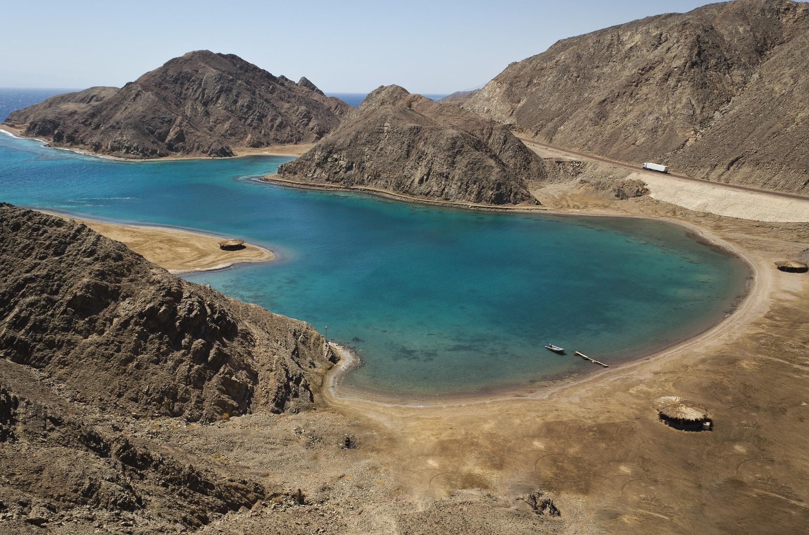
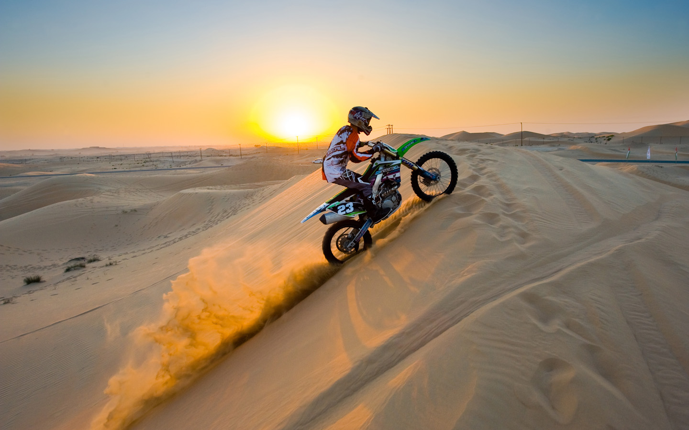

السياحة العلاجية

سفر لأماكن تقدم علاجات طبية أو طبيعية مثل الينابيع والمستشفيات.
السياحة الدينية

زيارة الأماكن المقدسة والمعابد لأداء الشعائر أو اكتشاف التراث الديني.
السياحة الترفيهية

الاستمتاع والاسترخاء في الشواطئ والمنتجعات.